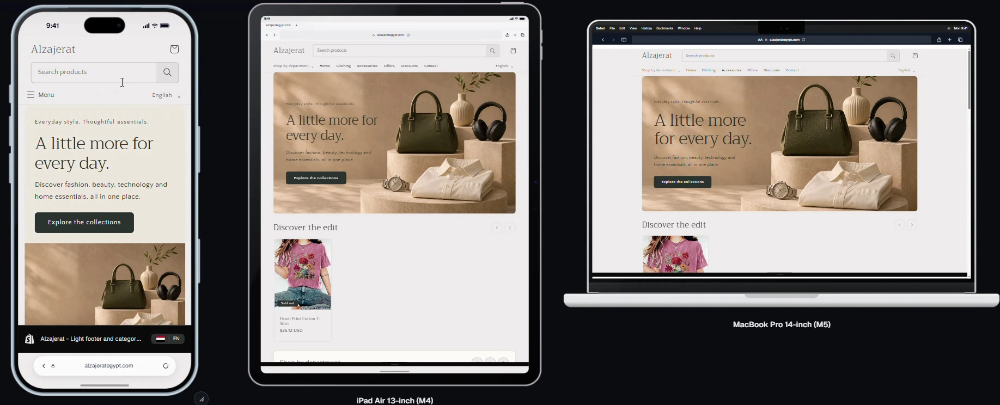
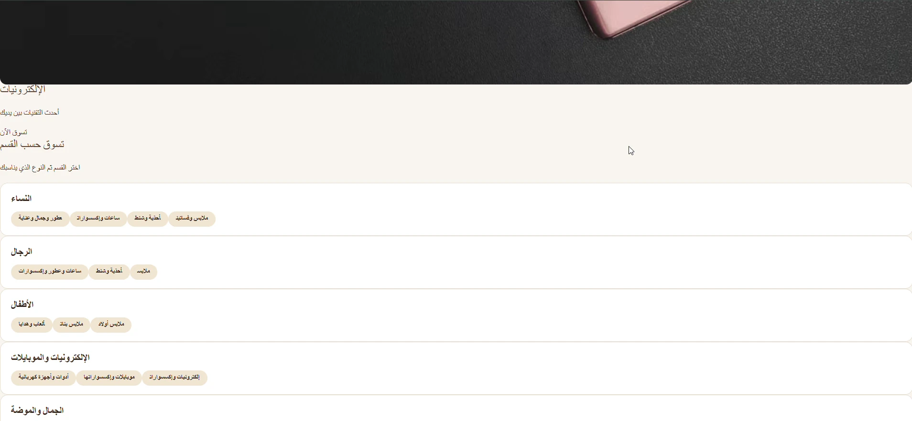
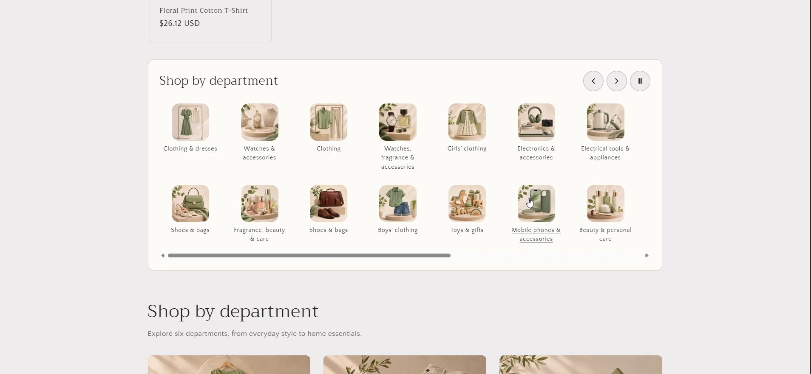
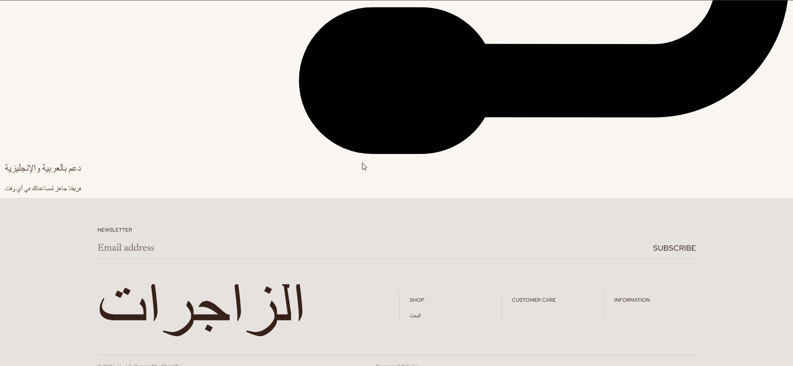
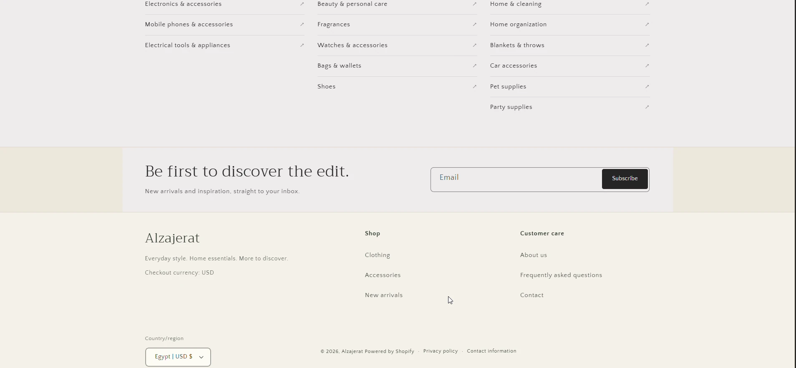
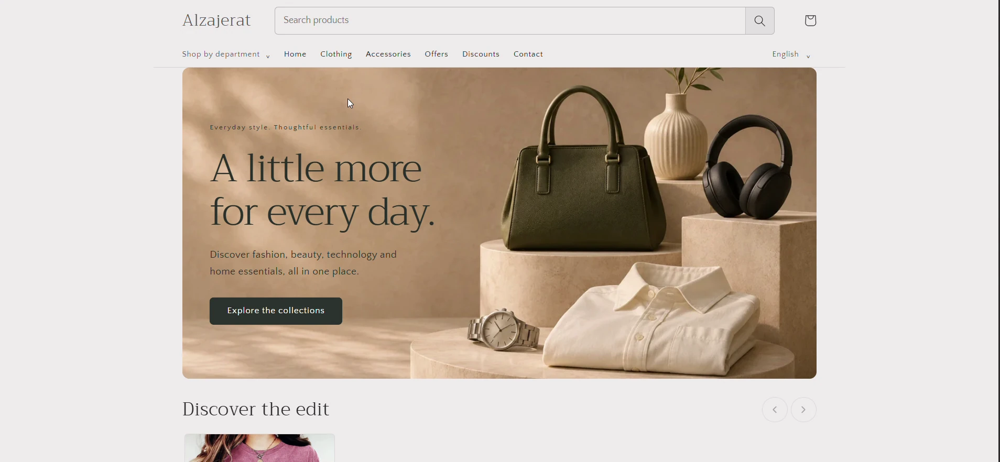
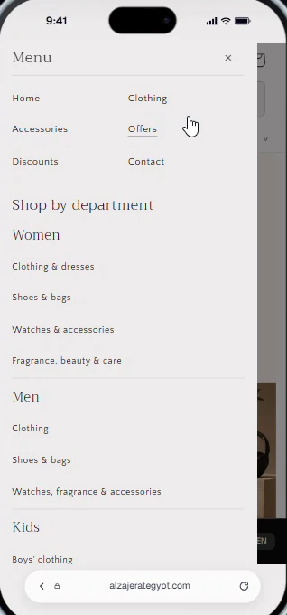

Alzajerat — Shopify Store Development
A storefront redesigned for clearer browsing, with the delivered experience preserved in project recordings.

The Client Brief
Alzajerat needed development of its existing Shopify store: a more coherent storefront, organized product browsing, and the configuration needed to sell across its selected markets. My role covered the customer-facing design and the store setup behind it.
Storefront & Theme
Customized the visual identity, typography, colors, homepage sections, navigation, and responsive presentation.
Catalog & Suppliers
Prepared the product catalog, descriptions, collections, and supplier connections, with clearer routes into the store's departments.
Markets & Languages
Configured the selected markets, languages, and currency presentation as part of the delivered Shopify setup.
Checkout & Operations
Completed the agreed payment, shipping, and tax settings, alongside the storefront and catalog work.
Before & Delivered
Selected views from the original and delivery recordings show how department browsing and the footer changed. Each capture retains its recorded scroll position; use Before and Delivered to inspect the two versions.
Department Browsing


Newsletter & Footer


A Closer Look at Delivery
The delivered homepage combines search, navigation, a defined hero, and product discovery. The mobile capture shows the corresponding menu and department structure.


The Delivered Outcome
The completed project brought the storefront design, product organization, and store configuration together into one handoff. The recordings document the visual delivery: a clearer hierarchy, grouped departments, consistent navigation, and a more structured footer.
This archive shows the project as delivered, using selected frames from the supplied before-and-after recordings.